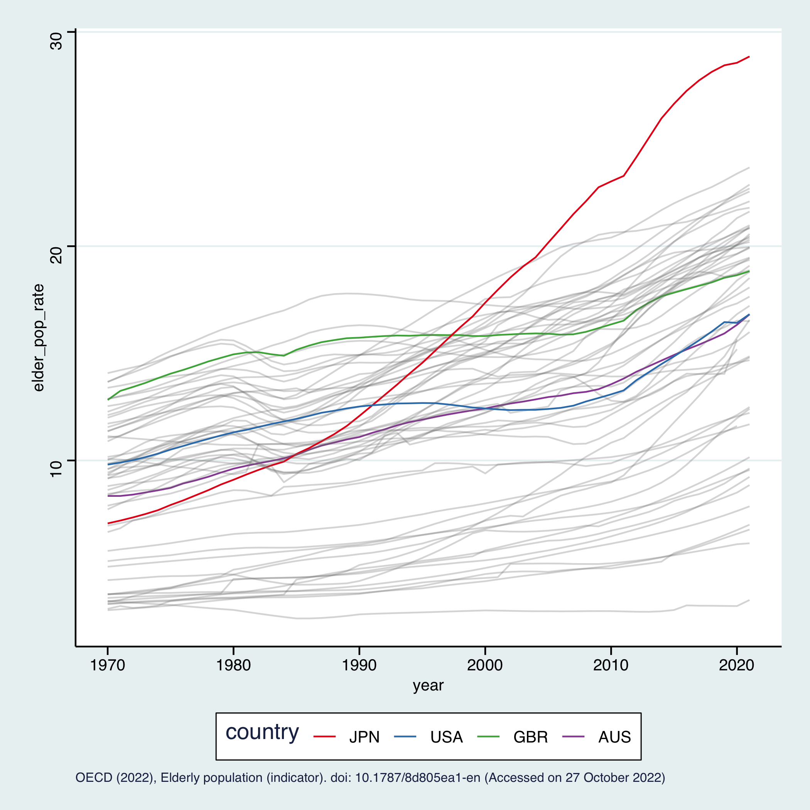
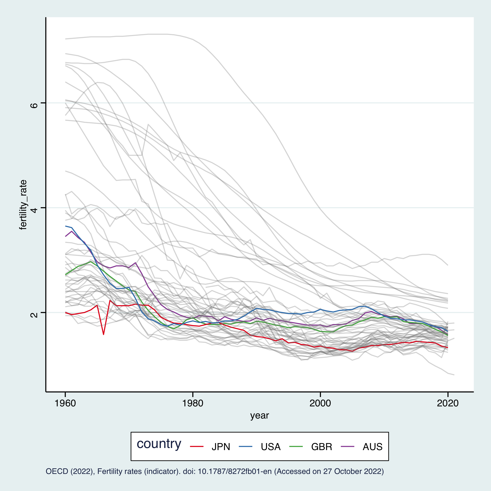
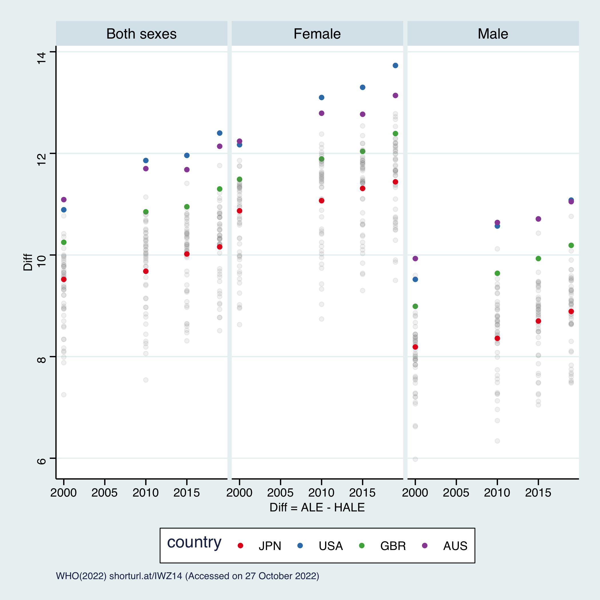

Progress Report:Heterogeneous Impacts of Informal Caregiving on Labor Market Outcomes
M1 Inoue Jin
1. Introduction
1.1 Why does informal caregiving matter ?
It is a well-known fact that developed countries are faced with the declining fertility rates and increasing elderly population(Fig 1. and Fig 2.). These trends predict that there are risks of declining labor supply in the long run while the demand of informal caregiving is increasing. Therefore, a substantial proportion of people in middle age will experience the “double burden” of care and employment(Heitmueller, 2007). In other words, most middle-aged workers will have difficulty managing a trade-off among hours worked, leisure and time to help caring.


Heitmueller(2007) briefly summarizes the potential behavior of carers, assuming that the impact of informal caregiving on labor supply can be decomposed into a substitution effect and income effect(Carmichael and Charles, 1998;2003). If they start to make informal care provision, there will be less time left to work and thus, the reservation wage is raised and they reduce labor supply(substitution effect). In contrast with this, reducing hours worked will also mean a cut in their budgets(income effect). If negative effects are empirically detected, it means that substitution effect is larger than income effect.
1.2 Literature review
Lots of literature study the relationship between care and employment status(extensive margin), or hours worked(intensive margin). Most of them found that there are negative correlation between care and extensive margin of work(Bolin et al., 2008; Crespo and Mira, 2010; Ettner, 1995; Heitmueller,, 2007; Leigh, 2010; Oshio and Usui, 2018; Pavalko and Artis, 1997; VanHoutven et al., 2013;). Based on the theoretical behavior of caregivers summarised above, whether there are any impacts of caring on some labor force outcomes or not, and if any, what kind of impacts caring actually has are important issues.
Earlier works using cross-section data show some negative relationships between the responsibility of caring and employment, and work hours respectively.(Muurinen, 1986; Stone and Short, 1990; Arber and Ginn, 1995; Ettner, 1996). As an exception, Wolf and Soldo(1994) analyzing only married women, show no evidence of reduced probabilities to be employed, or of reduced hours worked. Ettner(1996) using the same dataset points out that the negative but insignificant effects on married women may be due to some reasons. First, married women’s labor force participation rate is initially lower than other categories. Second, limited sample size may decrease the statistical power to reject the null. Also, they mention that including respondents who care for persons with disabilities other than parents or parents-in-law in the comparison group as “non-caregiver” may dilute caregiving effects.
As is obvious from the nature of informal caregiving as a treatment variable, there is an endogeneity problem because it is considered as a self-selection problem whether individuals assume responsibility for informal care provisions or not. Previous literature deal with this problem by applying instrumental variables, such as the number of disabled people in the household and the age of friends of the respondent(Heitmueller, 2007), indicators meaning that mother or father have bad health, lives far away and deceased, and the number of siblings(Bolin et al., 2008).
However, some literature show that there is no evidence against the null hypothesis that informal caregiving dummy as a treatment variable can be treated as exogeneous(Bolin et al., 2008; Ciani, 2012, Heitmueller, 2007; Oshio and Usui, 2018; Van Houtven et al., 2013). It is not necessarily true that there is no use in applying IVs to this empirical problem, but it may be true that endogeneity is not the main issue that influences the results to greater degree.
Recent studies using panel data concludes with the existence of negative impacts of informal caregiving on employment(Ciani, 2012; Heitmueller, 2007; Leigh, 2010; Oshio and Usui, 2018;Pavalko and Henderson, 2006; Van Houtven et al., 2013). Especially, Leigh(2010) and Oshio and Usui(2018) report that the estimates of fixed effect estimation are both negative, but they are smaller in its size than those of cross-section OLS.
2. Expected Contribution
Expected key contribution of this project is to shed light on the heterogeneity of the impacts of caregiving on labor market outcomes, especially in terms of heterogeneous length of time in which caregivers are “treated”.
The motivation for focusing on the cohort in which one gets treated for the first time is as follows. Leigh (2010) points out about why the negative estimates obtained from fixed effect estimation are smaller in its size than those from OLS estimation that there is a possibility that the impact of caregiving on labor market outcomes might take several years to manifest itself. As far as I know, previous literature almost use models based on the static two-way fixed effects model, and they evaluate the impact of caregiving only in terms of the average effect of situation that caregivers get treated only once summarized as the two-way fixed effect estimates.
(canonical TWFE specification ????)
However, caregiving as a treatment is considered to last for several periods of time, because the length of time for which people give provisions of caregiving is assumed to be several years on average. According to the Figure 3 below, the differences of average life expectancy (ALE) and the healthy life expectancy (HALE) are almost in the range of 8 years to 15 years, although there are some heterogeneity across sexes and countries.

This difference is roughly expected length of time for which one needs care in some way, and these differences are assumed to increase in both sexes in the future. Thus, the dynamic effects of informal caregiving on the labor market outcomes may be of concern to policy-makers facing with the trade-off between the employment and the increasing demand of informal caregiving. All things considered, there is a need for studying the dynamic relationship between caring and labor market outcomes making the most of the quality of the longitudinal data. This is the main motivation for this research project.
Also, according to the national representative survey about the middle-aged Americans(Caregiving in the U.S., 2020), caregivers responded that once they’ve started to give provisions of caregiving, they have stopped saving(28%) and they have taken on more debt(23%), both of which could have longer-term aftereffects on caregiver’s financial security into the future, especially if the caregiving lasts for a long time. This also motivates me to study the impacts of informal caregiving on the labor market outcomes like wages or household income.
3. Data
In this project, I’m going to use the Health and Retirement Survey (HRS) in the United States, which is national representative longitudinal survey aimed at middle-aged Americans. This survey is conducted every two years and a large proportion of this dataset is publicly available online. Currently, the waves from 1992 to 2020 are available. The important aspect of this dataset is that Van Houtven et al.(2013) used this dataset, which explored the heterogeneous impacts of informal caregiving on labor market outcomes by tasks and intensity of caregiving. Thus, throughout this project, it is possible to fairly compare results with previous literature, which enables me to put this project in the context of accumulated works on caregiving and employment. Also, the relative larger sample size and detailed time periods (every 2 years) are important properties of this dataset in terms of the feasibility of the estimation.
Variables of interest in this project will be following variables used in Van Houtven et al.(2013). Outcomes are some labor market outcomes, like, paid employment status, hours worked, and wages. Treatment indicators represent the types of caregiving, such as “any type of caring”, “intensive caregiver”, “chore caregiver”, and “personal caregiver”.
4. Discussion : model and specification
How to specify the model is critical and difficult issue. The baseline model of this analysis is the canonical dynamic two-way fixed effects model below.
\(canonical dynamic TWFE\)
However, this type of “event study” specification including leads and lags is said to be contaminated by some bias(Sun and Abraham, 2021). Thus, recent DiD literature proposes new estimation procedures with multiple treatment timings(Callway and Sant’Anna, 2021; Sun and Abraham, 2021; Borusyak et al., 2021) with “staggered adoption design”, which means that once individuals get treated, they remained treated until the end of time periods. However, considering the application to this project, staggered adoption assumption may be violated because the longer the time periods of dataset become, the more care-recipients may pass away. In other words, some treatment indicators may switch on and off in this project.
Such situations are often seen in empirical applications, and thus, some related methods are proposed. De Chaisemartin and D’Haultfœuille (2022) proposes a new DiD estimator for intertemporal treatment effects by extending the event-study approach for binary-and-staggered treatments. Also, Imai and Kim(2021) proposes matching methods for panel data allowing multiple units to switch their treatment status multiple times over time.